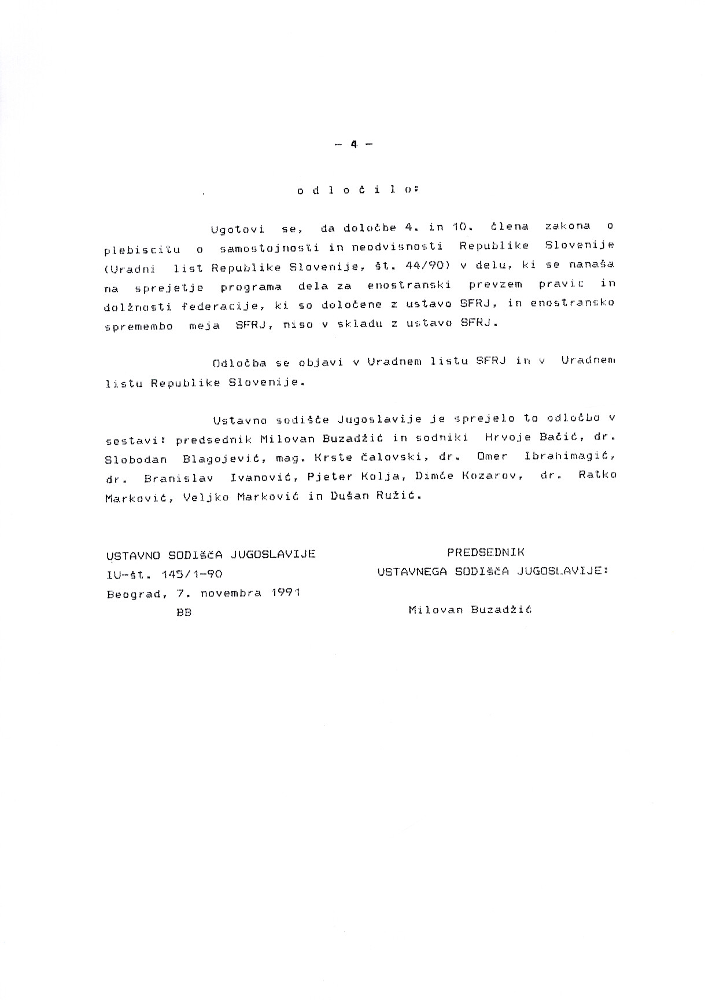
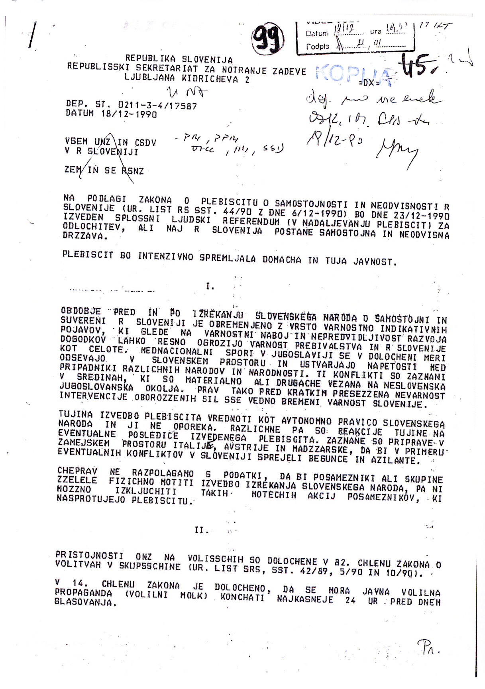
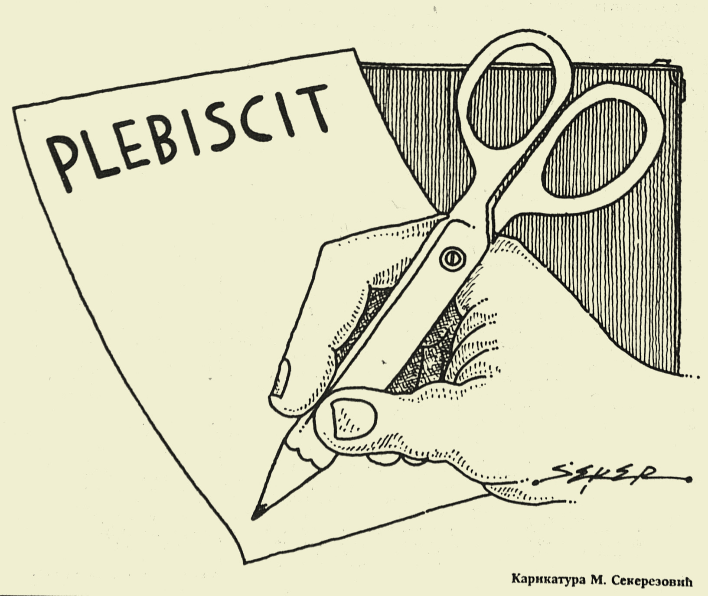
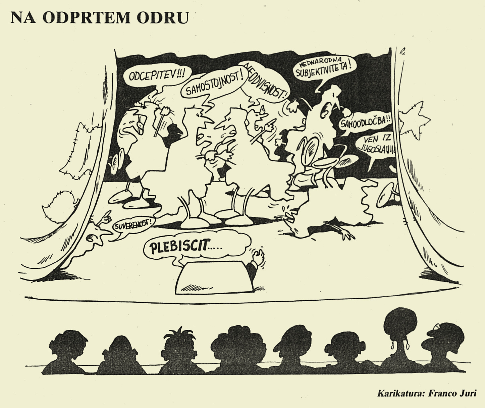
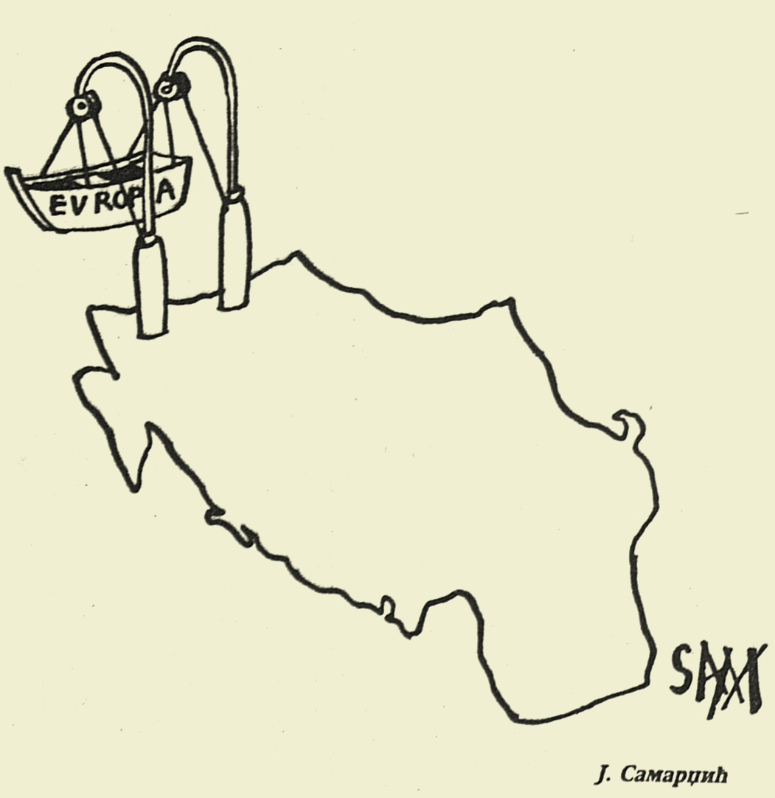
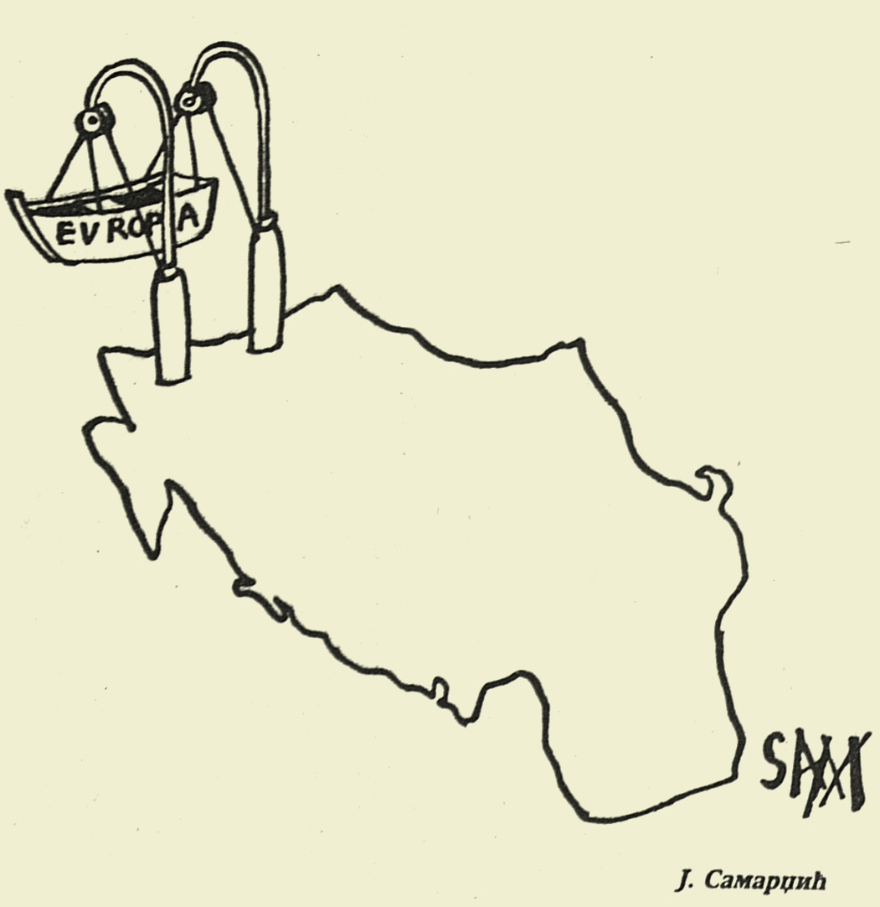

1
PRED
PLEBISCITOM
PLEBISCITOM
STOPILI
SMO
SKUPAJ
SMO
SKUPAJ
Enotnost političnih strank in poslanskih skupin Skupščine Republike Slovenije
Delegati so na seji Skupščine Republike Slovenije 6. decembra 1990 sprejeli Zakon o plebiscitu o samostojnosti in neodvisnosti Republike Slovenije. Takrat je bila podana tudi Izjava o dobrih namenih, v kateri je bilo poudarjeno, da vzpostavitev samostojne države ni usmerjena zoper nikogar v Jugoslaviji niti zunaj nje ter da enako pravico priznava tudi drugim narodom v Jugoslaviji. Neposredno pred sejo skupščine pa so prvaki strank podpisali sporazum, s katerim so se zavezali k skupnemu prizadevanju za uspeh plebiscita in k temu, da si zaslug zanj ne bo lastila nobena stranka.
Sporazum političnih strank in poslanskih skupin Skupščine Republike Slovenije o skupnem nastopu na plebiscitu za samostojno in neodvisno državo Republiko Slovenijo.
Pod sporazum so se podpisali za: Klub delegatov narodnostne skupnosti – Roberto Battelli; Klub neodvisnih poslancev – Franc Gradišar; Liberalno demokratično stranko – Jožef Školč; Liberalno stranko – Vitomir Gros; Slovensko demokratično zvezo – Spomenka Hribar; Slovensko kmečko zvezo – Ivan Oman; Slovenske krščanske demokrate – Lojze Peterle; Socialistično stranko Slovenije – Viktor Žakelj; Stranko demokratične prenove – Ciril Ribičič in Miran Potrč; Zeleno Slovenijo – Dušan Plut in Socialdemokratsko stranko – Jože Pučnik.
Predplebiscitni miting v Ljutomeru.
Zakon o plebiscitu o samostojnosti in neodvisnosti Republike Slovenije.
2. člen
Na plebiscitu glasovalni upravičenci z »da« ali »ne« odgovorijo na vprašanje: »Ali naj Republika Slovenija postane samostojna in neodvisna država?«
Na plebiscitu glasovalni upravičenci z »da« ali »ne« odgovorijo na vprašanje: »Ali naj Republika Slovenija postane samostojna in neodvisna država?«
Glasovanje o Zakonu o plebiscitu.

Izjava o dobrih namenih
(slovenščina – angleščina).
(slovenščina – angleščina).
Razglas skupščine RS.
Razglas Republiške volilne komisije v slovenščini, madžarščini in italijanščini.


Posebna številka Poročevalca Skupščine Republike Slovenije.
ZA VEDO
ŽELJNEJŠE
ŽELJNEJŠE


Osnutek Zakona o plebiscitu o samostojnosti in neodvisnosti Republike Slovenije z obrazložitvijo in Dodatno poročilo k predlogu Zakona o plebiscitu o samostojnosti in neodvisnosti Republike Slovenije.
Glasovanje na Ustavnem sodišču Jugoslavije.


Plebiscit pred Ustavnim sodiščem v Beogradu:
- Pobuda za začetek postopka za oceno ustavnosti zakona o plebiscitu o samostojnosti in neodvisnosti Republike Slovenije,
- Odločba o oceni ustavnosti 4. in 10. člena Zakona o plebiscitu o samostojnosti in neodvisnosti Republike Slovenije,
- Sporočilo za javnost o stališčih Predsedstva SFRJ o slovenskem plebiscitu.


Gradivo »Osamosvajanje Slovenije«, ki ga je Izvršni svet RS obravnaval in sprejel na 40. seji 30. novembra 1990, Vsebina: Pomen in namen plebiscita, Posamezni vidiki osamosvajanja Slovenije, Aktivnosti po plebiscitu – kopija še pri Vladi RS 1/6.
Mednarodne aktivnosti RS v zvezi s plebiscitom.
Glasovanje o Zakonu o plebiscitu dne 6. 12. 1990 v Skupščini SR Slovenije.
ODMEVI V
ČASOPISJU
ČASOPISJU
NI NAS
BILO
STRAH
BILO
STRAH
Nacionalna varnost v času plebiscita
Obdobje pred in po ter seveda v času samega glasovanja na plebiscitu je bilo s stališča varnosti zelo problematično. Mednacionalni spori v Jugoslaviji so v določeni meri odsevali tudi v slovenskem prostoru in ustvarjali napetosti med pripadniki različnih narodov in narodnosti. Posledično ni bilo mogoče izključiti akcij posameznikov ali skupin, ki bi želeli fizično motiti izvedbo plebiscita oziroma bi sovražno delovali po plebiscitu. Za preprečitev le-tega so morali organi za notranje zadeve v okviru rednih zadolžitev in spremljanja varnostnih razmer še posebej budno opravljati nekatere specifične naloge.

Odgovor na delegatsko vprašanje v zvezi s pričakovanimi posledicami plebiscita.
Poročilo o možnosti sabotaž na železnici po plebiscitu.

Obvestilo o neprimernem napisu preko plakata o plebiscitu.
Poročilo o možnosti sabotaž na železnici po plebiscitu.
Uradni zaznamek o zaznavi raznih komentarjev v zvezi s plebiscitom in druga opažanja.
Poročilo o stanju pred plebiscitom.
Zborovanje Zveze za ohranitev enakopravnosti občanov 1. decembra 1990 v Ljubljani.


ZA VEDO
ŽELJNEJŠE
ŽELJNEJŠE

Depeša Republiškega sekretariata za notranje zadeve glede nalog organov za notranje zadeve v času plebiscita.
Poročilo Uprave za zatiranje kriminalitete RSNZ o izhodiščih za delo kriminalistične službe v Republiki Sloveniji v času pred, med in po plebiscitu.
PODPRLI
SO
NAS
SO
NAS
Podprli so nas Slovenke in Slovenci v zamejstvu in po svetu
Od konca novembra do konca decembra 1990 so prihajali v Slovenijo številni klici, telefaksi in pisma, v katerih so Slovenci v zamejstvu in po svetu izražali podporo »stari« domovini v njenih prizadevanjih po osamosvojitvi. Ti so se pomnožili zlasti po pozivu dr. Janeza Dularja in Spomenke Hribar, ki sta v imenu Izvršnega sveta Republike Slovenije in v imenu Iniciativnega odbora konference Republike Slovenije za Svetovni slovenski kongres dala pobudo za zbiranje podpisov v podporo plebiscitni odločitvi. Odziv Slovencev je bil izredno velik in je nadvse ugodno vplival na politično ozračje v plebiscitnih dneh, saj se je okrepil občutek, da gre za zgodovinsko odločitev vsega slovenskega naroda.
Pobuda dr. Janeza Dularja in Spomenke Hribar vsem slovenskim društvom, organizacijam in verskim središčem po svetu k zbiranju podpisov za osamosvojitev Slovenije.

Poziv predsednika Skupščine Republike Slovenije dr. Franceta Bučarja rojakom k sodelovanju na plebiscitu.
Razlaga 6. in 8. člena zakona o plebiscitu o možnostih glasovanja naših zdomcev.
Pregled zbranih podpisov naših rojakov v tujini v podporo pozitivni opredelitvi na plebiscitu o samostojnosti in neodvisnosti Republike Slovenije po državah.
Podpora naših rojakov v zamejstvu in po svetu

ODMEVI V
ČASOPISJU
ČASOPISJU
KAMPANJA
NAS JE
PREPRIČALA
NAS JE
PREPRIČALA
Oglaševalska kampanja nas je prepričala
Izvedba oglaševalske kampanje za izvedbo projekta plebiscit je bila zaupana republiškemu sekretarju Stanetu Staniču iz Republiškega sekretariata za informiranje. K delu so bili pritegnjeni oglaševalski strokovnjaki in uredniki nekaterih časopisov in televizije. V podporo plebiscitu so se pojavljali oglasi v časopisih, plakati, televizijski in radijski spoti, obešanke, priponke in spominske stojke za vsako družino. Politiki različnih strank pa so skupaj obiskovali slovenske kraje in predstavljali 23. december kot dan velike odločitve.
Uradne priponke iz medijske kampanje v podporo plebiscitu.
Razglas iz medijske kampanje v podporo plebiscita.
»Če hočemo, da na svet prizna, se moramo najprej priznati sami.«
Uradni plakat iz medijske kampanje v podporo plebiscitu.
Možnosti propagandne podpore slovenskemu plebiscitu.
Informacija republiškega sekretarja Staneta Staniča o propagandni akciji za podporo plebiscita.
Vsakodnevne promocijske tiskovne konference za domače in tuje novinarje.
Idejni projekt propagandne podpore plebiscita, ki ga je pripravila Futura d.o.o.
Zapis s sestanka predsednikov oz. predstavnikov strank in drugih skupin zastopanih v Skupščini Republike Slovenije o usklajevanju predplebiscitnih dejavnosti.
»S štirimi milijoni pridnih rok se ne bojimo samostojne prihodnosti.«

»Slovenija – moja država.«
ZA VEDO
ŽELJNEJŠE
ŽELJNEJŠE
Plakati političnih strank v podporo plebiscitu.
NAVKLJUB
DVOMOM
DVOMOM
Navkljub dvomom smo z vsakim decembrskim dnem vse bolj verjeli, da nam bo uspelo
Široka javna podpora je bila razvidna tudi iz pisem različnih posameznikov in družbenih skupin, manjkalo pa ni niti pisem tistih, ki se z izvedbo plebiscita niso strinjali.



 

SMO
VSE BOLJ
VERJELI
VSE BOLJ
VERJELI
Navkljub dvomom smo z vsakim decembrskim dnem vse bolj verjeli, da nam bo uspelo
Od konca novembra 1990 so potekale javnomnenjske raziskave potencialne udeležbe in opredelitve ZA in PROTI na plebiscitu. S približevanjem dneva plebiscita sta se konstantno povečevala deleža tistih, ki bi se udeležili plebiscita in tistih, ki bi glasovali ZA samostojno državo Slovenijo.

Raziskava javnega mnenja z naslovom »Ali bi glasovali ZA samostojno državo Slovenijo ali PROTI?« z grafi in obrazložitvijo.
Raziskave javnega mnenja »Slovenski plebiscit 1990.« Naslovnice 12 telefonskih raziskav javnega mnenja v zvezi s približujočim plebiscitom.
ODMEVI V
ČASOPISJU
ČASOPISJU

Prve napovedi: glasovalo jih bo veliko.
Razpad, plebiscit, Jugoslavija.


Javnomnenjske raziskave.
DAN
PLEBISCITA
PLEBISCITA